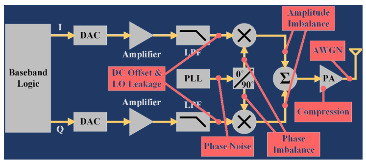
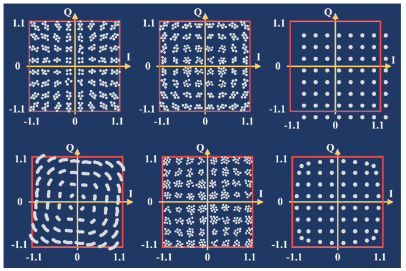

By GO SEMI & Beyond staff
The use of artificial intelligence (AI) techniques such as machine learning is growing as the semiconductor industry discovers new ways to use these approaches to do things that humans cannot. In this issue, we talk with Keith Schaub, Vice President of Business Development for Advantest America’s Applied Research Technology and Ventures, about unique research Advantest is conducting with the Univ. of Texas, Dallas, to integrate machine learning into a challenging area of chip development: RF transceiver design, test and manufacturing.
Q. What led Advantest to begin investigating the use of machine learning for this application?
A. Machine learning has been around for a long time. It’s actually a subset of AI, by which machines learn how to complete tasks without being explicitly programmed to do so. There have been many startups over the years that looked to leverage machine learning, but it’s never really been implemented previously within the semiconductor industry. As we have begun to do more work looking at the potential advantages of using AI, we’ve come to realize there are some practical applications by which the industry could greatly benefit.
**Q. What is the approach you’re developing for implementing machine learning? **
A. The approach we’ve been working on with UT Dallas is a proof of concept for how to take a machine learning method and apply it to semiconductor manufacturing and test – specifically, RF transceivers. Machine learning is much better suited to analog than to digital devices. Digital is a series of 1s and 0s, so the system can either recognize something or not, but there’s no ability to drill down in terms of granularity in order to leverage the more powerful aspects of machine learning. Analog systems require far more data because they’re more complex, making them a better environment for machine learning.
In RF applications, the numerous transmission protocols, large amounts of data, and large bandwidths with high data rates create challenges that call for the development of new algorithms for which modern machine learning is well suited. RF transceivers are affected by a variety of impairments, such as compression, interference and offset errors, as well as IQ imbalance. IQ signals form the basis of complex RF signal modulation and demodulation, both in hardware and in software, as well as in complex signal analysis.
Figure 1 shows a typical RF transceiver circuit, with a number of potential noise errors highlighted in red. A graphical representation of the signal quality can be generated to correspond with each error (Figure 2). The challenge for the operator is knowing which error generated which plot, and which errors are the most problematic.
The approach we’ve developed is a machine learning-based solution for noise classification and decomposition in RF transceivers. The machine learning system can be trained to learn and then identify and match up each impairment to each noise plot; this is something that would be virtually impossible for a human to do.
Figure 1. RF circuit with potential noise errors in red.
Figure 2. Constellation plot showing signal quality impairments caused by various noise errors.
**Q. How would this be put to use in a manufacturing environment? **
A. Figure 3 illustrates how the machine learning solution works. During the training process – this is literally how the system learns to recognize and classify data – a set of constellation points from early versions of the ICs being developed are fed into a machine learning system. Extracted features are separated by category as either noise-type classification or noise-level regression, with the system learning what each type is and how to separate and recognize them by individual error. This is indicated by the different colors assigned to each specific noise type. This is particularly valuable because, while RF transceiver designs, like those of most analog circuits, involve a high degree of customization, certain types of noise errors can potentially occur regardless of the specific circuit.
Once the training process is complete, the system can be put into use in production mode with actual DUTs [devices under test], and use what it has learned through the training process to apply models, identify the various types of errors and provide an impairment report. The system doesn’t have to go through lengthy downtime because the assessment can be completed quickly, and the resulting report allows the user to determine which errors are most critical and need to be addressed so that no damage or yield loss occurs.
Figure 3. Machine learning process for RF transceiver noise classification and decomposition.
This approach can be used throughout the test process – not only for device and system-level test, but also during design-for-test, so that analog/RF designers can better simulate and understand whether their designs will work. This is important due to amount of hand/custom work and the number of variables associated with analog device design.
Q. At what point do you see this technique being broadly adopted in the industry? What challenges would prevent this from occurring?
A. While the technology is mature enough that it could be implemented right away, there are several reasons machine learning has not yet been broadly adopted in the semiconductor industry. For one, there haven’t been sufficient resources/datasets to support its widespread use. For another, the industry is highly risk averse and concerned about security, so companies don’t want to make their data – which is their valuable IP – available for the machine learning process. They have it in the cloud, but in their own individual clouds, which don’t talk to each other. My belief is that use of machine learning will become widespread when the big IDMs [integrated device manufacturers] take the initiative, and the rest of the industry will follow suit.
NOTE:
Advantest’s Applied Research Technology and Ventures group would like to acknowledge the recent publication at the 2019 IEEE 37th VLSI Test Symposium (VTS) of a paper titled “Machine Learning-based Noise Classification and Decomposition in RF Transceivers,” which details the work described in this interview. The paper was jointly developed by Deepika Neethirajan, Constantinos Xanthopoulos, Kiruba Subramani, Yiorgos Makris (UT Dallas), Keith Schaub and Ira Leventhal (Advantest America).
